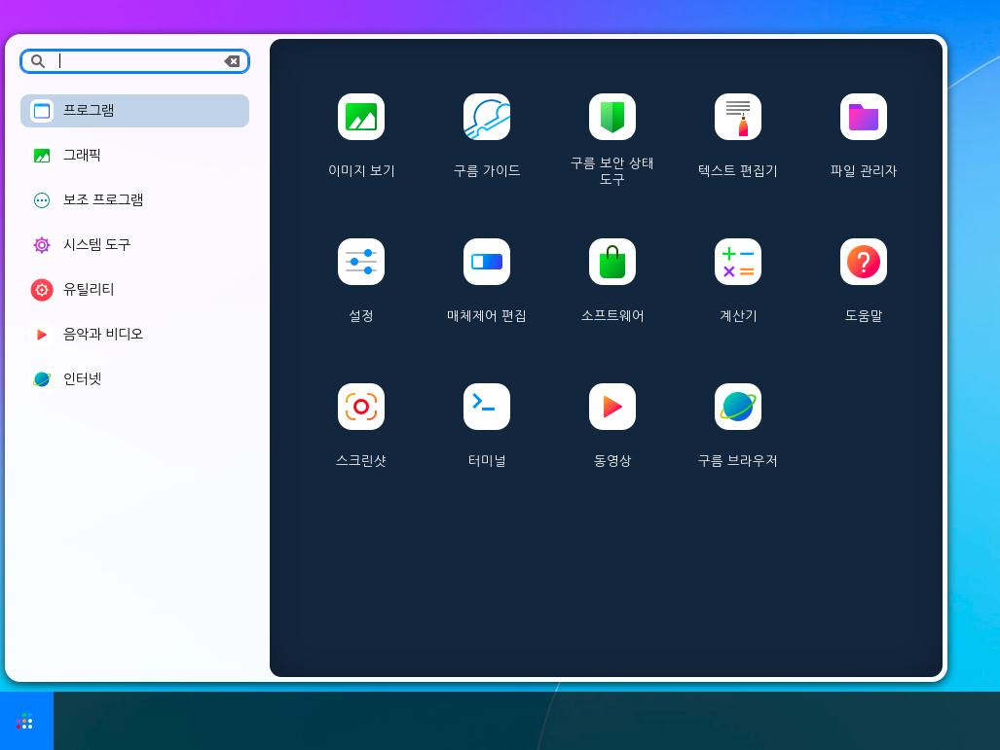
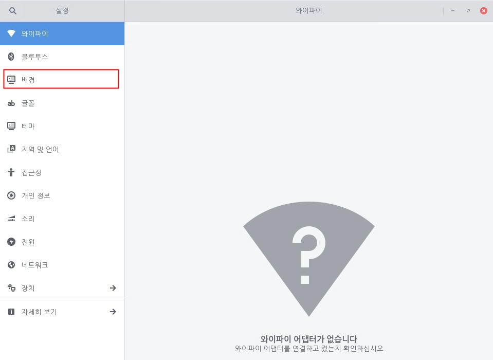
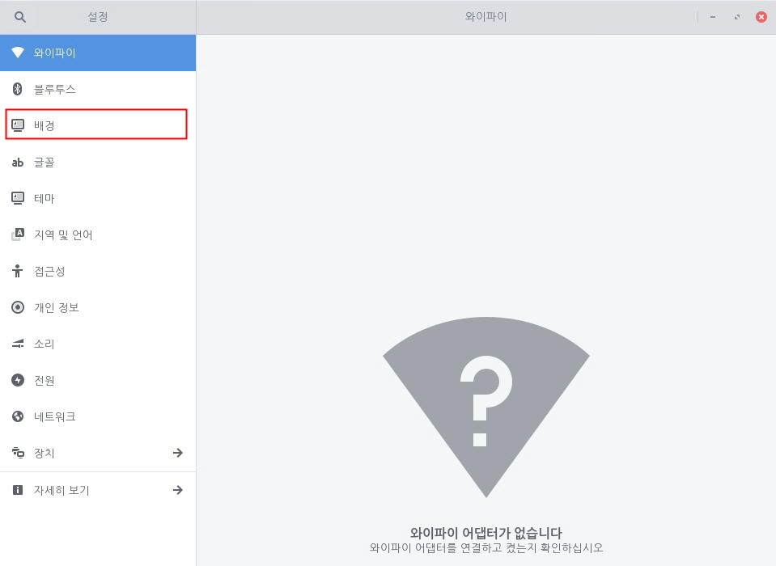
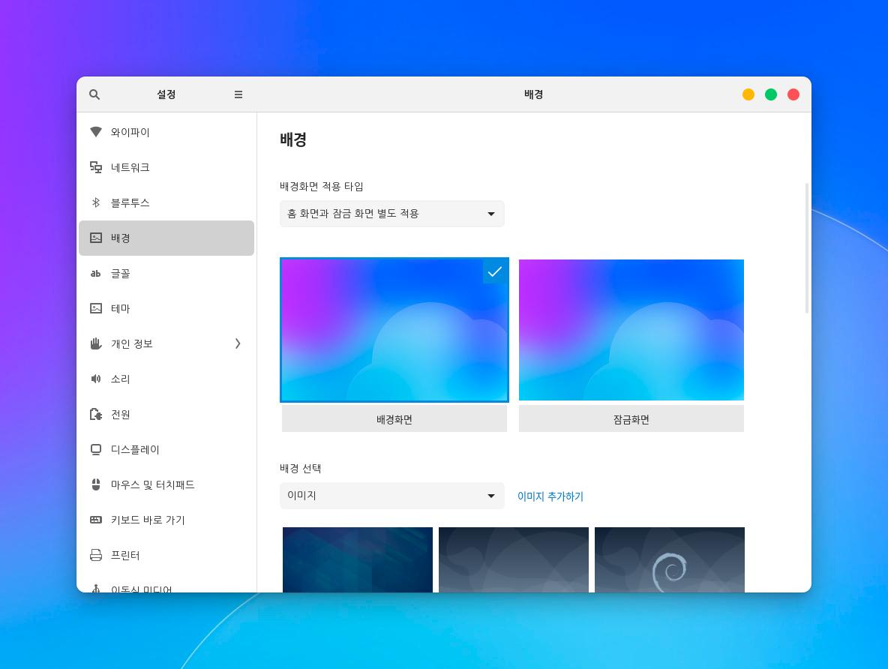
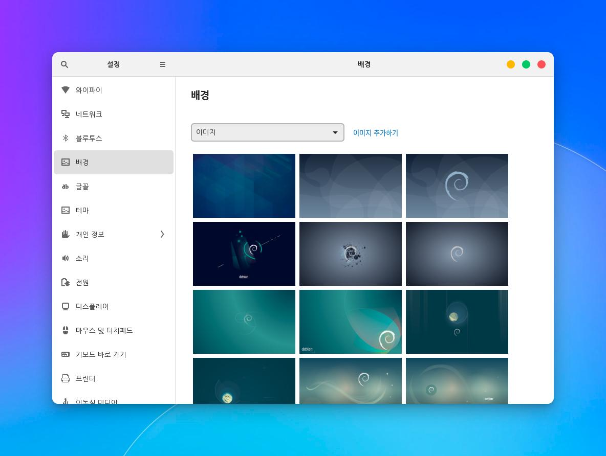

사용자의 바탕 화면 및 잠금 화면의 배경을 변경할 수 있습니다. 한컴구름에서 기본적으로 제공되는 이미지 또는 사용자가 추가한 사진으로 배경을 변경할 수 있습니다. 이 설정은 바탕 화면 및 잠금 화면 배경에만 적용되므로 메뉴 또는 아이콘을 변경하려면 테마 변경을 참고하세요. 다음 단계를 수행하여 바탕 화면 및 잠금 화면의 배경을 변경합니다.1. 좌측 하단의 [시작]아이콘을 클릭하고 검색 창에 "설정"을 입력한 후 [설정] 애플리케이션을 실행합니다.
 2. [설정] 애플리케이션 사이드 바에서 [배경]을 클릭합니다.
2. [설정] 애플리케이션 사이드 바에서 [배경]을 클릭합니다.
3-1-1. 배경 이미지를 변경하고 싶은 경우 [배경]을 클릭합니다. 3-1-2. 기본 이미지에서 선택할 경우 [배경 이미지], 추가한 사진을 선택할 경우 [사진], 단색으로 선택할 경우 [색]을 클릭하여 원하는 이미지를 선택합니다.3-2-1. 잠금 화면 이미지를 변경하고 싶은 경우 [잠금 화면]를 클릭합니다. 3-2-2. 기본 이미지에서 선택할 경우 [배경 이미지], 추가한 사진을 선택할 경우 [사진], 단색으로 선택할 경우 [색]을 클릭하여 원하는 이미지를 선택합니다.